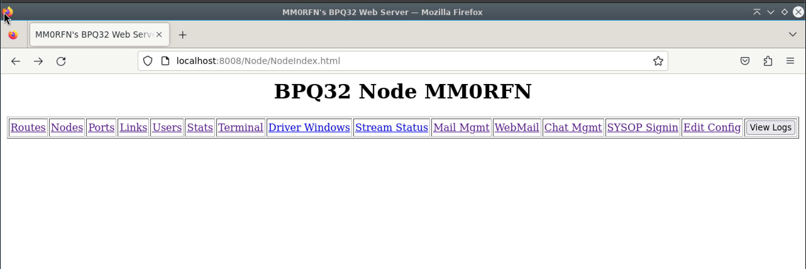

BPQ¶
Set Up Repo¶
If you have not already done so, set up the repo as shown here.
Install¶
To install LinBPQ from the repo, run the below commands:
Terminal Commands
sudo apt update && sudo apt install linbpq
Pre-Configure¶
We need to prepare the system and get configuration files in place. This must be run on the command line, it's simply the fastest way.
Copy these three lines, one-at-a-time into your terminal and hit enter after each one.
Terminal Commands
sudo cp /usr/share/doc/linbpq/examples/bpq32.cfg /etc/bpq32.cfg
sudo chown :linbpq /etc/bpq32.cfg
sudo chmod 644 /etc/bpq32.cfg
Tip
Without a config file installed to /etc/bpq32.cfg, BPQ from the repo will not start. If you are looking to use a config file in a different location, remove or modify ConditionPathExists=/etc/bpq32.cfg in /usr/lib/systemd/system/linbpq.service
Configure¶
The configuration file I ship in the repo, there are hopefully some obvious fields to fill out.
You can find the configuration file at /etc/bpq32.cfg and use something like
Featherpad to edit it.
Tip
To learn more about editing text in Linux, see here.
| Field | Example | Purpose |
|---|---|---|
| NODECALL | MM0RFN | The callsign your node shall identify as |
| NODEALIAS | RFNNOD | The alias a calling NET/ROM station can use to connect directly to you |
| LOCATOR | IO87dc | A 6 figure Maidenhead square where you are |
| PASSWORD | test123 | A sysop password for configuration activities |
| AUTOSAVE | 1 | Autosave the NET/ROM Nodes Table on shutdown |
| NODESINTERVAL | 30 | Interval between NET/ROM NODES broadcasts in minutes |
| MINQUAL | 50 | The minimum quality of NET/ROM node included in your NODES broadcasts. |
| CTEXT | Hi you look great! *** |
Text displayed when a user connects |
Ports¶
Port configuration blocks in BPQNode aren't too complicated. A common Gotcha is that you configure a port specific broadcast and end up double-broadcasting, both the node master broadcast and the port specific one.
KISS¶
A common port entry for a NinoTNC specifically (but also, more generally, a KISS Modem) looks like:
PORT
PORTNUM=1
ID=VHF
TYPE=ASYNC
PROTOCOL=KISS
KISSOPTIONS=ACKMODE
COMPORT=/dev/ttyACM0
SPEED=57600
FRACK=4000
PACLEN=150
DIGIFLAG=0
QUALITY=192
MINQUAL=20
ENDPORT
Key settings to observe are the COMPORT, which should be the serial port of the device, and SPEED. For a NinoTNC this is always 57600, but for QtSoundModem, Direwolf or older hardware may be 9600 or something else. Check your modem configuration!
QUALITY sets the assumed quality of connections coming in - I recommend higher quality (up to 200) for higher speed links. Setting this to 0 will disable NET/ROM on the port, and this is current recommended standard practise on HF within the UK Packet Radio Network.
Telnet¶
BPQ's Telnet Port sets the TCP Ports for Telnet, FBB and HTTP connections, alongside the username and password. This will come in useful when using QtTTCP as a monitor and control application.
PORT
PORTNUM=9
ID=Telnet
DRIVER=Telnet
CONFIG
LOGGING=1
CMS=1
DisconnectOnClose=1
TCPPORT=8010
FBBPORT=8011
HTTPPORT=8008
LOGINPROMPT=user:
PASSWORDPROMPT=password:
MAXSESSIONS=10
CTEXT=Thanks for connecting\n Enter ? for list of commands\n\n
USER=username,xxxxxxxx,m0aaa,,SYSOP
ENDPORT
USER is the key configuration to change here - change username to your desired administrator username, xxxxxxx to the password and m0aaa to the callsign of the administrator.
Startup¶
Head back to the terminal and run
Terminal Commands
sudo systemctl start linbpq
This will tell the system you want to start the linbpq service. Navigate to
http://127.0.0.1:8008 if you are on the systme you've
performed the install on and you should see a webpage like below:
